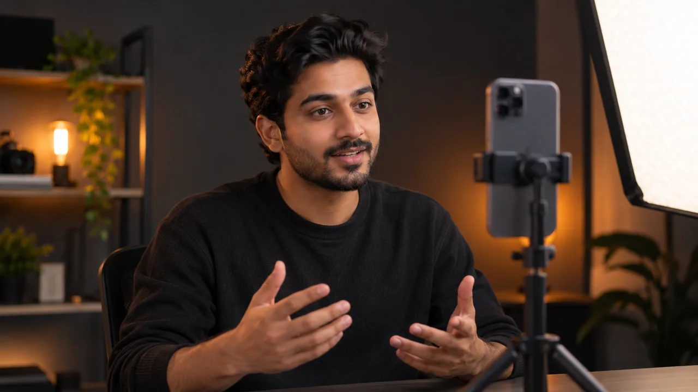

Bring
Three or four photos from different angles, or a clean portrait you already made. Bring a well-lit training clip for the video-avatar route.
Create a Flow character video and a verified video-trained avatar test. Compare what each one gets right, then record the results in your Homework Doc.
Saturday 14 November 2026 · 8:00–10:00 PM IST · Session 13
Use your own likeness or footage you have permission to use. The Homework Doc records your links and review notes.

Three or four photos from different angles, or a clean portrait you already made. Bring a well-lit training clip for the video-avatar route.
One Flow character and a short Agent-generated test, plus one verified video-trained avatar and a short test.
Compare identity, voice, spoken words, framing, and captions. Record one first fix for each result.
Paste the source, character, and test-video links into the Homework Doc. Keep the assets organized for the portfolio session.
Input: Your multi-angle photos from the previous session. Reuse a clean portrait if you already have one.
Do: Follow the instructor-shared image prompt in the cohort group to make a front-facing portrait with clear lighting and little background detail. The complete prompt is not included in the provided source packet, so this page does not reproduce one.
Save: The source-photo links and one selected portrait.
Review: Your face is recognizable, unobstructed, and well lit; the background does not compete with it.
First fix: If the likeness is off, check the reference photos and background. Start a new project if old generations are mixing in.
Next: Upload the selected portrait to Flow.
Input: Your selected portrait and a short UGC idea or dialogue for the test.
Do: In a new Flow project, open Characters, upload the portrait, and select Nano Banana Pro. Choose a template voice, preview it with sample dialogue, adjust speed or tempo if useful, and add it to the character. Name the character; a description is optional. Tag the saved character in the prompt. Turn on Agent and use the class settings: Always ask, Omni Flash, 9:16 portrait, and one variation. Review the scene breakdown and credit request before you approve generation.
Save: The saved character, chosen voice details, approved scene plan, and a short test video.
Review: The tagged identity remains recognizable across scenes; the voice stays attached; dialogue is not repeated or cut off; generated text does not distract.
First fix: If voice preview is silent, add sample dialogue and refresh. For identity drift, compare each scene prompt for changes in face, age, hair, or outfit. If the film-set wording introduces actors, revise it to an equipment-filled film warehouse with no actors. Remove inaccurate captions and add them in an editor if needed.
Next: Compare the Flow test with your video-trained avatar.
Input: A well-lit training video of yourself, with your face and mouth visible and modest hand gestures.
Do: Open HeyGen using the instructor-shared link and choose the real-person avatar option. Upload or record footage, then name and create the avatar. Select the video voice or record a voice sample. Complete the tool's consent and identity verification steps using your own likeness.
Save: Your verified avatar and a short speaking test. The reference guide recommends two to three minutes of continuous speech; follow the current tool instructions and limits.
Review: Your identity is recognizable; speech and lip movement are clear; framing is not stretched.
First fix: If the face looks stretched, compare the source and output aspect ratios. If the voice or captions are inaccurate, revise the dialogue or voice setup and review again.
The class recording showed a 15-second free option using Avatar 3. Check current availability and model choices rather than relying on that recorded limit.
Input: Your two test videos, the selected portrait, and the notes from the workflow checks.
Do: Compare face consistency, voice, repeated or cut-off words, lip movement, stretched framing, and generated captions. Record one visible strength, one issue, and the first fix you tried for each route. Choose the result you plan to carry into the portfolio session.
Save: Paste the source, character, and test-video links plus your comparison and portfolio choice into the official Homework Doc. Keep the assets organized in Drive.
Review: The Doc has working links, a specific evidence-based comparison, and a clear next improvement. No separate submission route was supplied.
Progress is saved in this browser only. It does not sync with the Homework Doc.
Create an image-based character, attach a template voice, and use Agent to plan and generate a multi-scene test.
Optional image-generation route shown in class for the clean portrait.
Draft and inspect a video prompt before using it in Flow; the class example catches setting and generation constraints.
Build and verify a video-trained avatar, then generate a short speaking test. The instructor shared the access link in the cohort group.